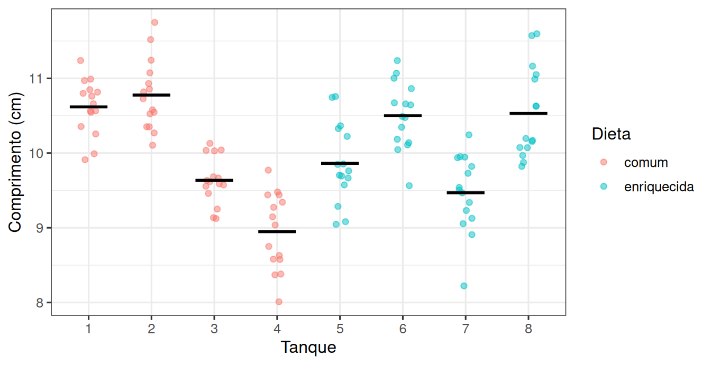
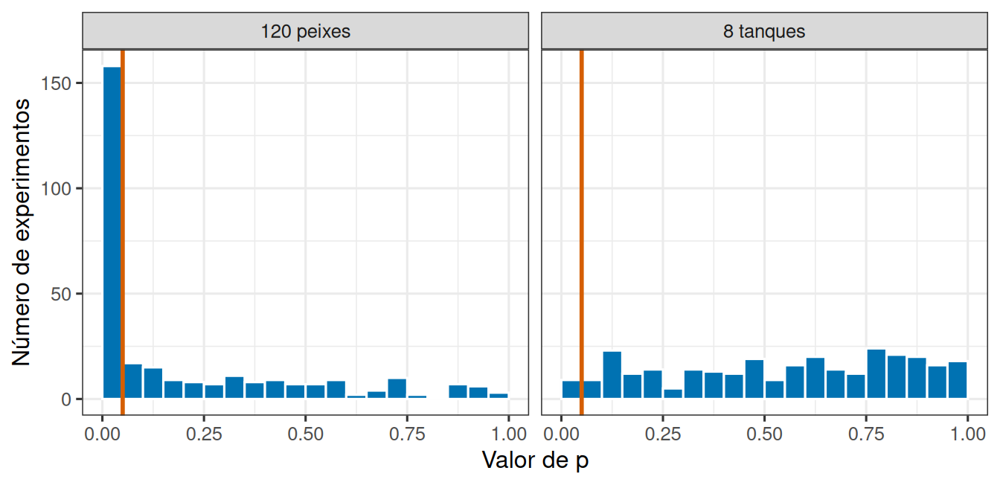

library(tidyverse)
theme_set(theme_bw(base_size = 12))Tanques, subamostras e o que conta como réplica
Prática em R 04
1 Um experimento que parece bom
Duas dietas para juvenis de robalo. Dois tanques: no tanque 1, dieta comum; no tanque 2, dieta enriquecida. Trinta peixes em cada. Sessenta medidas de comprimento.
Nesta prática vamos construir esse experimento no computador, de modo que saibamos exatamente qual é a verdade, e depois analisá-lo de duas maneiras: uma errada e uma certa.
2 Como se monta um experimento com tanques?
O ponto que decide tudo é este: peixes do mesmo tanque compartilham as condições daquele tanque. Se o tanque 1 está meio grau mais quente, todos os seus peixes sentem isso.
Vamos escrever isso em duas etapas.
Primeiro, cada tanque recebe o seu próprio desvio em relação ao que a dieta prevê:
efeito_dieta <- 0 # nenhuma diferença entre as dietas
variacao_entre_tanques <- 0.8
variacao_entre_peixes <- 0.5
tanques <- tibble(
tanque = 1:8,
dieta = rep(c("comum", "enriquecida"), each = 4),
media_tanque = 10 + if_else(dieta == "enriquecida", efeito_dieta, 0) +
rnorm(8, mean = 0, sd = variacao_entre_tanques)
)
tanques# A tibble: 8 × 3
tanque dieta media_tanque
<int> <chr> <dbl>
1 1 comum 10.5
2 2 comum 10.9
3 3 comum 9.68
4 4 comum 9.15
5 5 enriquecida 9.72
6 6 enriquecida 10.6
7 7 enriquecida 9.57
8 8 enriquecida 10.4 Repare no que acabamos de fazer: efeito_dieta vale zero. As duas dietas são idênticas. Toda diferença entre tanques vem do rnorm() da última linha, ou seja, do acaso de cada tanque.
Agora os peixes, sorteados em torno da média do seu tanque:
peixes <- tanques |>
slice(rep(1:8, each = 15)) |>
mutate(comprimento = rnorm(120, mean = media_tanque, sd = variacao_entre_peixes))
glimpse(peixes)Rows: 120
Columns: 4
$ tanque <int> 1, 1, 1, 1, 1, 1, 1, 1, 1, 1, 1, 1, 1, 1, 1, 2, 2, 2, 2, …
$ dieta <chr> "comum", "comum", "comum", "comum", "comum", "comum", "co…
$ media_tanque <dbl> 10.54000, 10.54000, 10.54000, 10.54000, 10.54000, 10.5400…
$ comprimento <dbl> 9.911061, 10.815487, 10.799225, 11.238640, 10.561528, 10.…slice(rep(1:8, each = 15)) repete cada linha de tanque 15 vezes, criando 15 peixes por tanque.
3 Como fica o experimento?
ggplot(peixes, aes(x = factor(tanque), y = comprimento, colour = dieta)) +
geom_jitter(width = 0.15, alpha = 0.5) +
stat_summary(fun = mean, geom = "crossbar", width = 0.6, linewidth = 0.4, colour = "black") +
labs(x = "Tanque", y = "Comprimento (cm)", colour = "Dieta")
4 A análise errada: 60 peixes por dieta
A tentação é comparar as duas dietas usando todos os peixes:
peixes |>
group_by(dieta) |>
summarise(n = n(), media = mean(comprimento), desvio = sd(comprimento))# A tibble: 2 × 4
dieta n media desvio
<chr> <int> <dbl> <dbl>
1 comum 60 9.99 0.858
2 enriquecida 60 10.1 0.685teste_errado <- t.test(comprimento ~ dieta, data = peixes)
teste_errado
Welch Two Sample t-test
data: comprimento by dieta
t = -0.67568, df = 112.47, p-value = 0.5006
alternative hypothesis: true difference in means between group comum and group enriquecida is not equal to 0
95 percent confidence interval:
-0.3766498 0.1850820
sample estimates:
mean in group comum mean in group enriquecida
9.994349 10.090133 5 A análise certa: 8 tanques
A unidade experimental é o tanque. Então primeiro resumimos cada tanque a um valor, e só depois comparamos as dietas:
medias_tanque <- peixes |>
group_by(tanque, dieta) |>
summarise(media = mean(comprimento), .groups = "drop")
medias_tanque# A tibble: 8 × 3
tanque dieta media
<int> <chr> <dbl>
1 1 comum 10.6
2 2 comum 10.8
3 3 comum 9.63
4 4 comum 8.95
5 5 enriquecida 9.86
6 6 enriquecida 10.5
7 7 enriquecida 9.47
8 8 enriquecida 10.5 teste_certo <- t.test(media ~ dieta, data = medias_tanque)
teste_certo
Welch Two Sample t-test
data: media by dieta
t = -0.19079, df = 4.912, p-value = 0.8563
alternative hypothesis: true difference in means between group comum and group enriquecida is not equal to 0
95 percent confidence interval:
-1.393308 1.201740
sample estimates:
mean in group comum mean in group enriquecida
9.994349 10.090133 Agora são 4 valores por dieta, e a variação usada como referência é a variação entre tanques, que é a variação relevante.
6 Uma execução não decide nada. E se repetíssemos 300 vezes?
Comparar as duas análises em um experimento só é frágil: cada execução sorteia tanques diferentes e pode dar qualquer resultado. A pergunta certa é sobre o comportamento a longo prazo de cada análise.
Como sabemos que a dieta não faz nada, qualquer conclusão de “há efeito” é um alarme falso. Um teste bem calibrado a 5% deveria dar alarme falso em cerca de 5% dos experimentos. Vamos medir isso nas duas análises.
resultados <- replicate(300, {
tanques <- tibble(
tanque = 1:8,
dieta = rep(c("comum", "enriquecida"), each = 4),
media_tanque = 10 + rnorm(8, mean = 0, sd = variacao_entre_tanques)
)
peixes <- tanques |>
slice(rep(1:8, each = 15)) |>
mutate(comprimento = rnorm(120, mean = media_tanque, sd = variacao_entre_peixes))
medias <- peixes |>
group_by(tanque, dieta) |>
summarise(media = mean(comprimento), .groups = "drop")
c(
errada = t.test(comprimento ~ dieta, data = peixes)$p.value,
certa = t.test(media ~ dieta, data = medias)$p.value
)
})Cada repetição monta um experimento novo, do zero, e devolve os dois valores de p. O objeto resultados guarda uma linha para cada análise:
taxa_errada <- mean(resultados["errada", ] < 0.05)
taxa_certa <- mean(resultados["certa", ] < 0.05)
c(errada = taxa_errada, certa = taxa_certa) errada certa
0.5266667 0.0300000 valores_p <- bind_rows(
tibble(analise = "120 peixes", p = resultados["errada", ]),
tibble(analise = "8 tanques", p = resultados["certa", ])
)
ggplot(valores_p, aes(x = p)) +
geom_histogram(binwidth = 0.05, boundary = 0, fill = "#0072B2", colour = "white") +
geom_vline(xintercept = 0.05, colour = "#D55E00", linewidth = 1) +
facet_wrap(~ analise) +
labs(x = "Valor de p", y = "Número de experimentos")
7 E se a dieta realmente funcionasse?
Volte ao primeiro bloco e troque uma linha:
efeito_dieta <- 1.2 # a dieta enriquecida aumenta 1,2 cm8 O mesmo problema em dados reais
Isso não é um artefato de simulação. Um levantamento no litoral holandês registrou o número de espécies em 45 estações distribuídas por 9 praias:
url <- "https://raw.githubusercontent.com/FCopf/datasets/refs/heads/main/zuur-2009-data-sets/RIKZ.txt"
rikz <- read_tsv(url, show_col_types = FALSE)
rikz |> count(Beach)# A tibble: 9 × 2
Beach n
<dbl> <int>
1 1 5
2 2 5
3 3 5
4 4 5
5 5 5
6 6 5
7 7 5
8 8 5
9 9 5Cinco estações por praia. Se a pergunta for sobre estações, as 45 linhas são 45 unidades. Se for sobre praias, há apenas 9, e as cinco estações de uma praia são subamostras dela.
por_praia <- rikz |>
group_by(Beach) |>
summarise(riqueza_media = mean(Richness))
por_praia# A tibble: 9 × 2
Beach riqueza_media
<dbl> <dbl>
1 1 11
2 2 12.2
3 3 3.4
4 4 2.4
5 5 7.4
6 6 4
7 7 2.2
8 8 4
9 9 4.6sd(rikz$Richness) / sqrt(45) # tratando as 45 estações como réplicas[1] 0.7459129sd(por_praia$riqueza_media) / sqrt(9) # tratando as 9 praias como réplicas[1] 1.228419